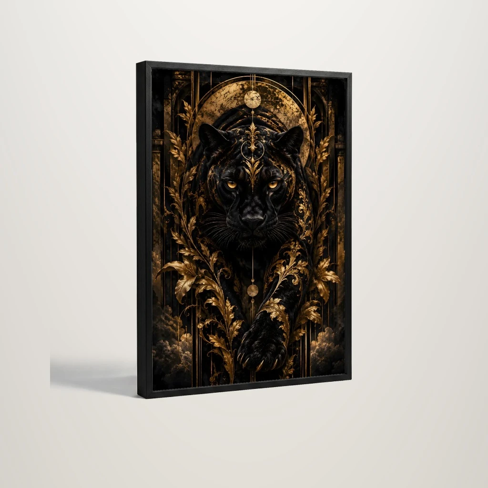

Encontre um ponto de conexão.
Pode ser um animal, uma forma, uma lembrança ou uma cor. Salve as obras que chamam a sua atenção e volte a elas depois.
OBSIDIAN REGALIA · OBRA EM DESTAQUE
Um olhar frontal entre folhagens e arcos dourados. Observe de perto o desenho que emerge do fundo negro.
Explorar as 99 obrasO seu olhar também mora aqui.
UM PONTO DE PARTIDA
Você não precisa conhecer um estilo pelo nome.
Comece pelo que desperta a sua atenção.
São convites para descobrir. O significado de uma obra também é seu.
UM ENCONTRO DE CADA VEZ
Salve o que gostar. Compare com calma.
A sua seleção fica neste navegador.

Visualização digital do acabamentoOS DETALHES TAMBÉM COMPÕEM
Preto para marcar o contorno. Branco para suavizar. Tons de madeira para conversar com o ambiente. Veja as opções de cada obra e descubra a combinação que faz sentido no seu espaço.
As opções variam conforme a obra e o tipo de quadro.
ESCOLHER PODE SER SIMPLES
Uma boa escolha respeita o seu gosto
e também o espaço que você tem.
Pode ser um animal, uma forma, uma lembrança ou uma cor. Salve as obras que chamam a sua atenção e volte a elas depois.
Meça a largura e a altura disponíveis. Uma marcação com papel ou fita removível ajuda a perceber o espaço ocupado antes de decidir.
Compare as molduras e os materiais na página da obra. Na consulta, confirme as medidas finais, o valor e a entrega para o seu endereço.
Um quadro físico com a arte impressa e o acabamento escolhido. Os tons dourados e a aparência de gesso, relevo ou mármore fazem parte da imagem impressa.
UM ESPAÇO SE CONSTRÓI COM ESCOLHAS